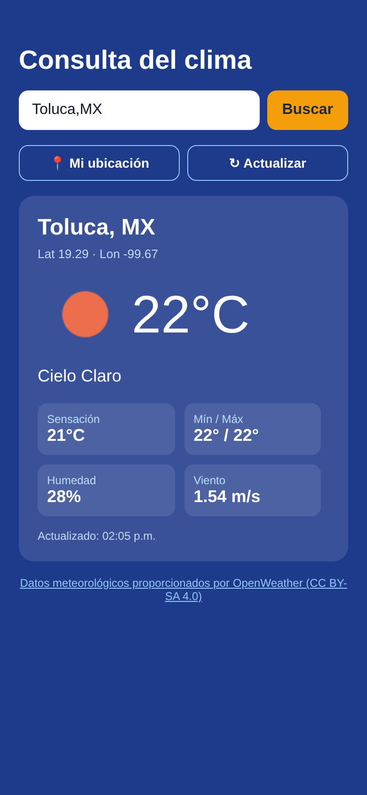
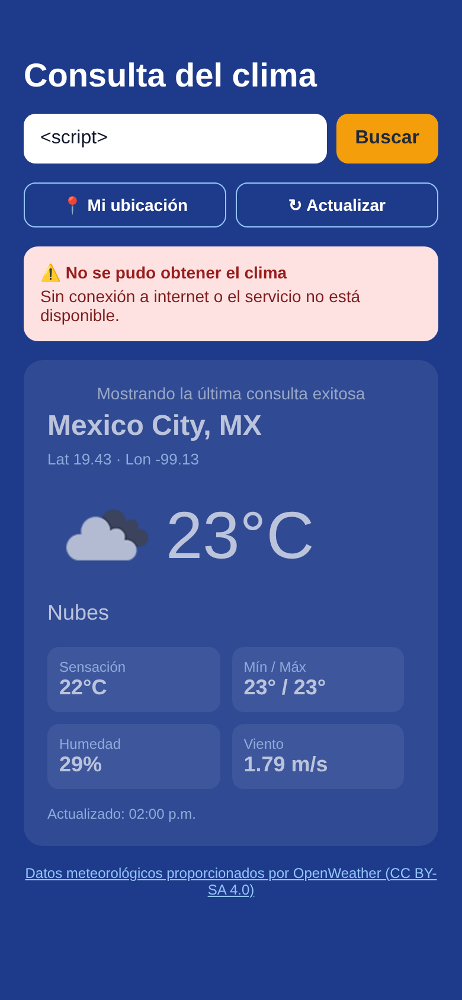
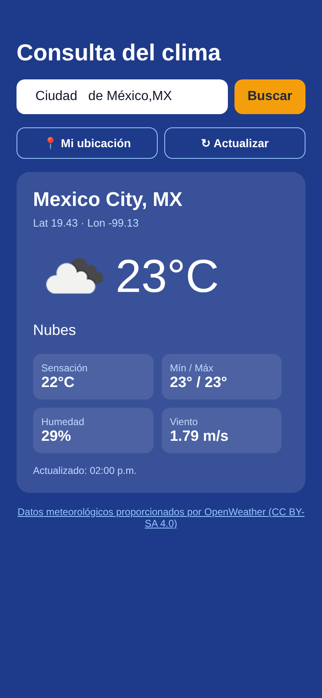
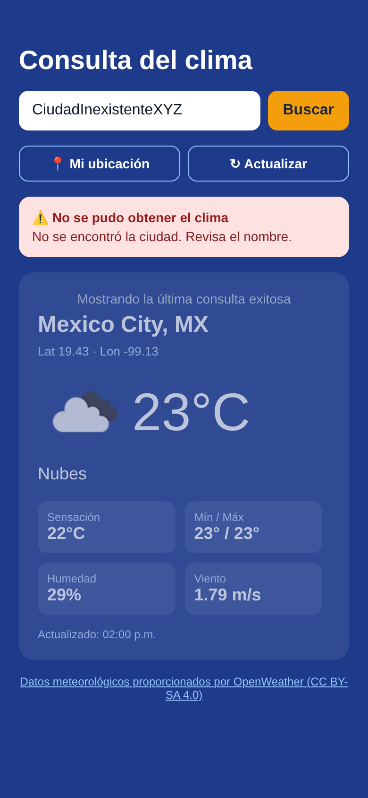
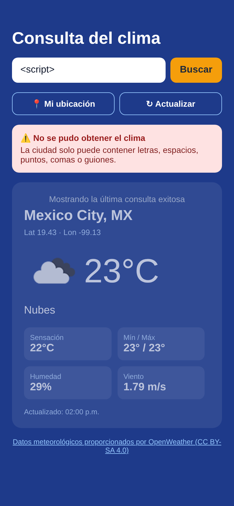

| Integrantes | |
| Grupo | |
| Docente | |
| API utilizada | OpenWeather – Current Weather Data 2.5 |
| Repositorio | https://github.com/Duvo050611/clima-app |
| Fecha | Noviembre de 2026 |
Una empresa necesita una aplicación móvil para consultar información de un servicio externo sin crear todavía una base de datos propia. Para resolverlo se desarrolló Clima App, un prototipo en React Native y Expo que consulta en tiempo real la API de OpenWeather. La app muestra la temperatura, las condiciones del clima y la ubicación de la ciudad buscada o del lugar donde está el usuario. Todos los datos vienen del servicio externo; la app no guarda nada en una base de datos.
| Elemento | Detalle |
|---|---|
| Creación | npx create-expo-app clima-app --template blank |
| Tecnologías | Expo SDK 58, React Native 0.88, React 19, expo-location, react-native-safe-area-context |
| Plataformas | Android e iOS (con Expo Go) y Web |
| Archivos principales | App.js (interfaz) y src/weatherService.js (cliente de la API) |
| Concepto | Detalle |
|---|---|
| Proveedor | OpenWeather (openweathermap.org) |
| Documentación | https://openweathermap.org/current |
| Endpoint | https://api.openweathermap.org/data/2.5/weather |
| Método HTTP | GET |
| Protocolo | HTTPS |
| Clave de acceso | Sí. Se envía en el parámetro appid y se obtiene con un registro gratuito. |
| Condiciones de uso | Plan Free: 60 llamadas por minuto y 1,000,000 por mes. Los datos tienen licencia CC BY-SA 4.0, que exige atribución. |
Parámetros utilizados
| Parámetro | Descripción |
|---|---|
q | Nombre de la ciudad, con país opcional (ej. Toluca,MX) |
lat, lon | Coordenadas GPS (botón "Mi ubicación") |
units=metric | Grados Celsius y metros por segundo |
lang=es | Descripción del clima en español |
appid | Clave de acceso |
Ejemplo de solicitud y estructura de la respuesta JSON (se muestran solo los campos que usa la app):
GET https://api.openweathermap.org/data/2.5/weather?q=Toluca,MX&units=metric&lang=es&appid=****
{
"coord": { "lon": -99.6672, "lat": 19.2883 },
"weather": [ { "description": "cielo claro", "icon": "01d" } ],
"main": { "temp": 17.39, "feels_like": 16.62, "temp_min": 17.39,
"temp_max": 17.39, "humidity": 55 },
"wind": { "speed": 2.1 },
"dt": 1793462400,
"sys": { "country": "MX" },
"name": "Toluca",
"cod": 200
}
| Requisito | Cómo se cumple |
|---|---|
| 1. Solicitar información mediante GET | fetch(url, { method: 'GET' }) en src/weatherService.js, con timeout de 10 s. |
| 2. Procesar la respuesta JSON | parseWeather() valida que la respuesta tenga los campos necesarios y la convierte en un objeto para la interfaz (redondea temperaturas y arma la URL del ícono). |
| 3. Mostrar al menos tres campos | Ubicación (ciudad, país y coordenadas), temperatura (actual, sensación térmica, mínima y máxima) y condición (descripción e ícono). Además: humedad, viento y hora de actualización. |
| 4. Actualizar o buscar | Búsqueda por ciudad, botón "Actualizar", deslizar hacia abajo para recargar y botón "Mi ubicación" (GPS). |
| 5. Indicadores de carga y errores | ActivityIndicator con el texto "Consultando OpenWeather…" y un recuadro rojo con el mensaje específico de cada error. |
Manejo de respuestas de la API
| Situación | Mensaje que ve el usuario |
|---|---|
| 200 OK | Se muestran los datos |
| 401 Clave inválida | "Clave de API inválida o aún no activada." |
| 404 Ciudad no encontrada | "No se encontró la ciudad. Revisa el nombre." |
| 429 Límite de solicitudes | "Se alcanzó el límite de solicitudes de la API. Espera un minuto…" |
| 5xx Error del servidor | "El servicio meteorológico no está disponible por ahora." |
| Sin red | "Sin conexión a internet o el servicio no está disponible." |
| Timeout (10 s) | "El servicio tardó demasiado en responder." |
| Respuesta vacía | "La API devolvió una respuesta vacía o incompleta." |


| Medida | Descripción |
|---|---|
| Uso de HTTPS | Todas las peticiones, incluidos los íconos del clima, usan https://. Así la clave y los datos viajan cifrados. |
| Protección de la clave | La clave no está escrita en el código. Se lee de la variable de entorno EXPO_PUBLIC_OPENWEATHER_API_KEY, definida en el archivo .env. Ese archivo está en .gitignore y no se sube al repositorio; solo se sube .env.example con un valor de ejemplo. Limitación: Expo incluye las variables EXPO_PUBLIC_* dentro de la app compilada. En producción, la app debería llamar a un backend propio que guarde la clave en el servidor. |
| Validación de parámetros | La ciudad se recorta y se normaliza, debe tener entre 2 y 60 caracteres y solo puede contener letras (incluidos acentos y ñ), espacios, puntos, comas, apóstrofes y guiones. Las coordenadas deben estar en los rangos válidos (±90° y ±180°). Los parámetros se codifican con URLSearchParams y una entrada inválida nunca se envía a la API. |
| Errores de conexión | Timeout de 10 s con AbortController y un mensaje claro cuando no hay red. Si falla una consulta nueva, la app conserva la última información válida. |
| Respuestas vacías | Antes de mostrar los datos se verifica que existan main y weather. |
| Límite de solicitudes | Mensaje específico para el código 429. Los botones se desactivan mientras hay una consulta en curso para evitar solicitudes repetidas. |
| Permisos mínimos | La ubicación se pide solo en primer plano y solo cuando el usuario pulsa "Mi ubicación". Si la niega, la app sigue funcionando. |
| Uso permitido y atribución | El plan gratuito permite el uso en prototipos. Por la licencia CC BY-SA 4.0, la pantalla muestra "Datos meteorológicos proporcionados por OpenWeather" con un enlace al sitio. |
| Campo | Detalle |
|---|---|
| Objetivo | Comprobar que la app hace la solicitud GET, procesa el JSON y muestra los campos requeridos. |
| Entrada | " Ciudad de México,MX " |
| Pasos | 1. Escribir la ciudad en el buscador. 2. Pulsar Buscar. |
| Resultado esperado | Aparece el indicador de carga y después una tarjeta con la ubicación, la temperatura en °C y la descripción del clima en español. |
| Resultado obtenido | HTTP 200. Mexico City, MX (lat 19.43, lon -99.13), 23 °C, sensación térmica de 22 °C, "nubes", humedad de 29 % y viento de 1.79 m/s. ✔ Aprobado |
| Justificación | Es el flujo principal de la app. En una sola consulta se comprueba que la entrada se normaliza (se quitan los espacios de más), que los caracteres no ASCII (é) se codifican bien en la URL, que funcionan los parámetros lang=es y units=metric y que se procesan los tres campos que pide la actividad. |
| Campo | Detalle |
|---|---|
| Objetivo | Comprobar el manejo de errores de la API y la validación de parámetros. |
| Entrada A | CiudadInexistenteXYZ |
| Resultado esperado A | La API responde 404 y la app muestra un mensaje claro sin cerrarse. |
| Resultado obtenido A | HTTP 404 {"cod":"404","message":"city not found"}. Se muestra "No se encontró la ciudad. Revisa el nombre." y se conserva la última consulta válida. ✔ Aprobado |
| Entrada B | <script> |
| Resultado esperado B | La app rechaza la entrada sin enviar la petición. |
| Resultado obtenido B | Se muestra "La ciudad solo puede contener letras, espacios, puntos, comas o guiones." Se registró el tráfico de red y hubo 0 peticiones a la API. ✔ Aprobado |
| Justificación | Los usuarios se equivocan al escribir y también pueden intentar inyectar código. La prueba muestra que la app distingue entre un error del servicio (404) y una entrada inválida que nunca sale del dispositivo. Esto cubre la validación y el manejo de errores de la Parte 3 y evita gastar solicitudes del límite de la API. |



git clone https://github.com/Duvo050611/clima-app.git cd clima-app npm install cp .env.example .env # colocar la API key de OpenWeather npx expo start # escanear el QR con Expo Go npx expo start --web # o abrir la versión web en el navegador
El prototipo cumple con el caso de estudio: consulta información de un servicio externo sin base de datos propia, la interpreta y la presenta en una interfaz funcional. Separar el acceso a la API (weatherService.js) de la interfaz (App.js) permitiría cambiar de proveedor o agregar un backend intermedio sin rediseñar la pantalla. Como mejoras a futuro se proponen un servidor proxy que proteja la clave, una caché local para consultar sin conexión y el pronóstico de varios días (endpoint /forecast).